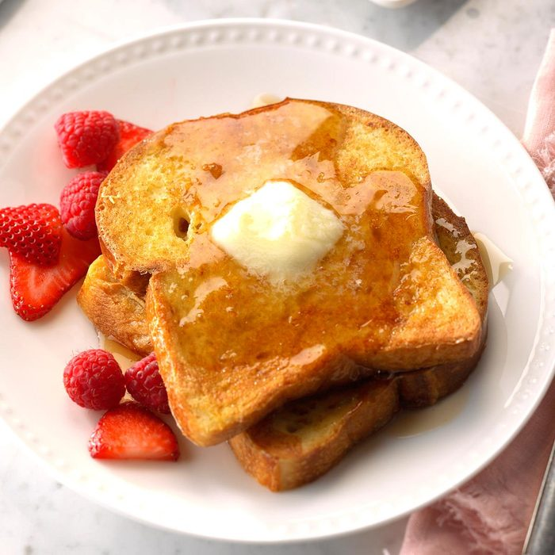

Frech Toast

Description
"We discovered this easy French toast recipe in Mexico. We couldn't figure out what made the French toast so
delicious until we learned the secret was vanilla. Since then, we've added a touch of vanilla to our waffle
and pancake recipes, and it makes all the difference." —Joe and Bobbi Schott, Castroville, Texas
Ingredients
- 4 large eggs, lightly beaten
- 1 cup 2% milk
- 2 tablespoons sugar
- 2 teaspoons vanilla extract
- 1/8 teaspoon salt
- 12 slices day-old sandwich bread
- Optional toppings: Butter, maple syrup, fresh berries and confectioners' sugar
Steps
- In a shallow dish, whisk together the first 5 ingredients. Preheat a greased griddle over medium heat.
- Dip bread in egg mixture, allowing to soak 30 seconds on each side. Cook on griddle until golden brown on
both sides. Serve with toppings as desired.